1008A46 cam shaft left rigid mount - r r
- Path
- Procedures > 10 ENGINE > 1008 POWER UNIT SUPPORTS > 1008A power unit fastenings > 1008A46 cam shaft left rigid mount - r r
- Kind
- repair procedure (removal / refitting; the operation number is the code)
- Applies to
- all engines; all production periods
- Interactive page
- https://sloeber94.github.io/elrnDB-a147/en/#/3024753
Applies to: engines: 1.6 TS; all production periods
 Removing
Removing
 Refitting
RefittingPosition the vehicle on the ramp.
Proceed with the removal 4450B10 Front WHEEL (one) - R.R. (Right side).
Proceed with the removal 7055B64 Engine compartment DUST shield in front wheel arch (one), left or right - R.R. (Right side).
Position a hydraulic jack under the engine.
1. Undo the nuts (1a) and (1b), then remove the timing side rigid engine support (1c).
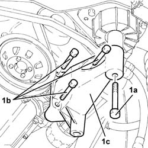
Applies to: engines: 1.6 TS; all production periods
Refitting
Removing1. Place the timing side rigid engine support (1a) back in its housing and secure it to the cylinder block/crankcase by tightening the bolts (1b) to the recommended torque.
 | Fastening | Component | Ø | Value (daNm) |
|---|---|---|---|---|
1b | Bolt | ENGINE MOUNT TIMING SIDE | M10 | (Crankcase side) 4.5 ÷ 5.5 |
2. Tighten the bolt securing timing side rigid engine support to the flexible mounting to the recommended torque.
| Fastening | Component | Ø | Value (daNm) |
|---|---|---|---|---|
2 | Bolt | ENGINE MOUNT TIMING SIDE | M12 | (Flexible mounting side) 7.9 ÷ 9.7 |
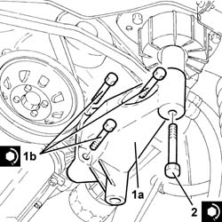
Applies to: engines: 1.6 TS; all production periods
Remove the hydraulic jack from under the engine.
Proceed with the refitting 7055B64 Engine compartment DUST shield in front wheel arch (one), left or right - R.R. (Right side).
Proceed with the refitting 4450B10 Front WHEEL (one) - R.R. (Right side).
Remove the car from the ramp.
Applies to: engines: 2.0 TS; all production periods
Removing
RefittingPosition the vehicle on the ramp.
Proceed with the removal 4450B10 Front WHEEL (one) - R.R. (Right side).
Proceed with the removal 7055B54 under-engine guard - r r .
Proceed with the removal 7055B64 Engine compartment DUST shield in front wheel arch (one), left or right - R.R. (Right side).
Position a hydraulic jack under the engine.
1. Undo the bolt securing the timing side rigid engine support to the flexible mounting.
2. Undo the bolts (2a) and remove the timing side rigid engine support (2b).
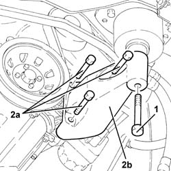
Applies to: engines: 2.0 TS; all production periods
Refitting
Removing1. Place the timing side rigid engine support (1a) back in its housing and secure it to the cylinder block/crankcase by tightening the bolts (1b) to the recommended torque.
| Fastening | Component | Ø | Value (daNm) |
|---|---|---|---|---|
1b | Bolt | ENGINE MOUNT TIMING SIDE | M10 | (Crankcase side) 4.5 ÷ 5.5 |
2. Tighten the bolt securing timing side rigid engine support to the flexible mounting to the recommended torque.
| Fastening | Component | Ø | Value (daNm) |
|---|---|---|---|---|
2 | Bolt | ENGINE MOUNT TIMING SIDE | M12 | (Flexible mounting side) 7.9 ÷ 9.7 |
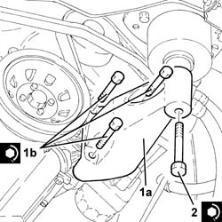
Applies to: engines: 2.0 TS; all production periods
Remove the hydraulic jack from under the engine.
Proceed with the refitting 7055B64 Engine compartment DUST shield in front wheel arch (one), left or right - R.R. (Right side).
Proceed with the refitting 7055B54 under-engine guard - r r .
Proceed with the refitting 4450B10 Front WHEEL (one) - R.R. (Right side).
Remove the car from the ramp.
Applies to: engines: 3.2 V6; all production periods
Removing
RefittingPosition the vehicle on the ramp.
Ensure that the ignition key is in OFF position, then disconnect the battery negative terminal (-).
 | Name | Connector |
|---|---|---|
- | Battery |
Drain the air conditioner coolant circuit 5040A10 Air conditioning refrigerant CIRCUIT - Draining and Refilling .
Proceed with removal 4450B04 right front wheel r r .
Proceed with removal 7055B54 under-engine guard - r r .
Proceed with removal 7055B66 Engine compartment DUST SHIELD protection in right front wheel arch - R.R. .
Proceed with removal 1092G10 single engine belt r r .
Proceed with removal 5040A20 air conditioner compressor - r+r - includes fluid level check and top up if necessary .
Proceed with removal 7055B91 Right front WHEEL ARCH LINER - R.R. .
1. Undo the bolt (1a) and remove the lower bracket (1b) securing the power steering pipes.
2. Release the engine oil pipes (2a) from the fastenings (2b).
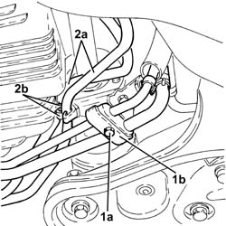
Applies to: engines: 3.2 V6; all production periods
1. Undo the bolts (1a) securing the engine oil/power steering system pipe bracket (1b) to the timing side rigid engine support.
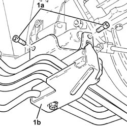
Applies to: engines: 3.2 V6; all production periods
Position a hydraulic jack under the engine.
1. Undo the nut fixing the timing side rigid engine support to the flexible mounting.
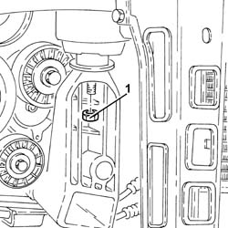
Applies to: engines: 3.2 V6; all production periods
1. Undo the nuts (1a) and remove the timing side rigid engine support (1b).
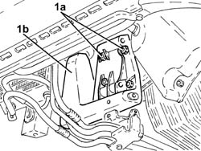
Applies to: engines: 3.2 V6; all production periods
Refitting
Removing1. Refit the timing side rigid engine support (1a)and secure it tightening the nuts (1b) to the recommended torque.
| Fastening | Component | Ø | Value (daNm) |
|---|---|---|---|---|
1b | Nut | ENGINE MOUNT TIMING SIDE | M8 | (Engine crankcase side) 2.3 ÷ 2.8 |
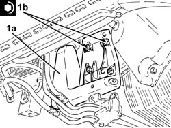
Applies to: engines: 3.2 V6; all production periods
1. Tighten the nut securing timing side rigid engine support to the flexible mounting to the recommended torque.
| Fastening | Component | Ø | Value (daNm) |
|---|---|---|---|---|
1 | Nut | ENGINE MOUNT TIMING SIDE | M10 | (Flexible mounting side) 4.5 ÷ 5.5 |
Remove the hydraulic jack from under the engine.
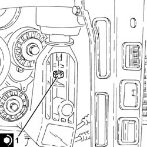
Applies to: engines: 3.2 V6; all production periods
Tighten the bolts securing the engine oil/power steering system pipe mounting bracket to the timing side rigid engine support.
Fasten the engine oil pipes using the bands.
Place the power assisted steering system lower pipe mounting bracket back in its housing and fasten it using the bolt.
Proceed with refitting 7055B91 Right front WHEEL ARCH LINER - R.R. .
Proceed with refitting 5040A20 air conditioner compressor - r+r - includes fluid level check and top up if necessary .
Proceed with refitting 1092G10 single engine belt r r .
Proceed with refitting 7055B66 Engine compartment DUST SHIELD protection in right front wheel arch - R.R. .
Proceed with refitting 7055B54 under-engine guard - r r .
Proceed with refitting 4450B04 right front wheel r r .
Fill the air conditioner coolant circuit 5040A10 Air conditioning refrigerant CIRCUIT - Draining and Refilling .
Connect the negative (-) battery terminal.
Remove the car from the ramps.
Applies to: engines: 1.9 JTD 8V; all production periods
Removing
RefittingPlace the car on a ramp.
7055B54 under-engine guard - r r
1092G10 single engine belt r r
1092A10 Crankshaft services PULLEY - R.R.
1. Position a hydraulic lift under the oil sump.
2. Undo the fixing bolts (2a) and remove the power unit rigid support (2b).
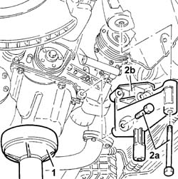
Applies to: engines: 1.9 JTD 8V; all production periods
Refitting
RemovingFit the power unit support.
Tighten the bolts fixing the support to the engine and to the mounting to torque.
| Fastening | Component | Ø | Value (daNm) |
|---|---|---|---|---|
- | Bolt | ENGINE MOUNT TIMING SIDE | M12 | 4.2 - 5.2 |
| Fastening | Component | Ø | Value (daNm) |
|---|---|---|---|---|
- | Bolt | REACTION LINK BRACKET ON ENGINE | M10 | 4.2 ÷ 5.2 |
Remove the hydraulic lift positioned under the oil sump.
1092A10 Crankshaft services PULLEY - R.R.
1092G10 single engine belt r r
7055B54 under-engine guard - r r
Remove the vehicle from the ramp.
Applies to: engines: 1.9 JTD 16V; all production periods
Removing
RefittingPosition the vehicle on the ramp.
Proceed with removal 4450B04 right front wheel r r .
Proceed with removal 7055B54 under-engine guard - r r .
Proceed with removal 7055B91 Right front WHEEL ARCH LINER - R.R. .
Proceed with removal 1092G10 single engine belt r r .
Proceed with removal 1092A10 Crankshaft services PULLEY - R.R. .
Position a hydraulic jack under the engine.
1. Undo the bolt securing timing side rigid engine support to the flexible mounting.
2. Undo the bolts (2a) and remove the timing side rigid engine support (2b).
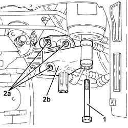
Applies to: engines: 1.9 JTD 16V; all production periods
Refitting
Removing1. Refit the timing side rigid engine support (1a) and secure it tightening the bolts (1b) to the recommended torque.
| Fastening | Component | Ø | Value (daNm) |
|---|---|---|---|---|
1b | Bolt | ENGINE MOUNT TIMING SIDE | M10 | (Crankcase side) 4.5 ÷ 5.5 |
2. Tighten the bolt securing timing side rigid engine support to the flexible mounting to the recommended torque.
| Fastening | Component | Ø | Value (daNm) |
|---|---|---|---|---|
2 | Bolt | ENGINE MOUNT TIMING SIDE | M12 | (Flexible mounting side) 7.9 ÷ 9.7 |
Remove the hydraulic jack from under the engine.
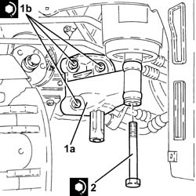
Applies to: engines: 1.9 JTD 16V; all production periods
Proceed with refitting 1092A10 Crankshaft services PULLEY - R.R. .
Proceed with refitting 1092G10 single engine belt r r .
Proceed with refitting 7055B91 Right front WHEEL ARCH LINER - R.R. .
Proceed with refitting 7055B54 under-engine guard - r r .
Proceed with refitting 4450B04 right front wheel r r .
Remove the car from the ramps.
Topics linked from this page (11)
- 1092A10 Crankshaft services PULLEY - R.R.
- 1092G10 single engine belt r r
- 4450B04 right front wheel r r
- 4450B10 Front WHEEL (one) - R.R.
- 5040A10 Air conditioning refrigerant CIRCUIT - Draining and Refilling
- 5040A20 air conditioner compressor - r+r - includes fluid level check and top up if necessary
- 7055B54 under-engine guard - r r
- 7055B64 Engine compartment DUST shield in front wheel arch (one), left or right - R.R.
- 7055B66 Engine compartment DUST SHIELD protection in right front wheel arch - R.R.
- 7055B91 Right front WHEEL ARCH LINER - R.R.
- A1B Battery ( Connectors )